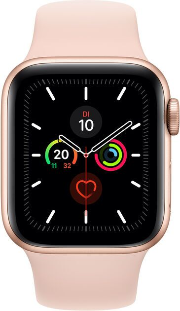

Apple Watch Series 5

Apple Watch Series 5 to szósta generacja inteligentnych zegarków firmy Apple, wydana we wrześniu 2019 roku. Zegarek działa na systemie operacyjnym watchOS 6.0 i oferuje wiele funkcji, takich jak monitorowanie aktywności fizycznej, powiadomienia z telefonu, odtwarzanie muzyki i możliwość wykonywania połączeń telefonicznych, a także wysyłania wiadomości tekstowych. Apple Watch Series 5 posiada wodoszczelność do głębokości 50 metrów, większy wyświetlacz niż poprzednie modele, bardziej wydajny procesor i nowe funkcje, takie jak wyświetlacz always-on Retina, kompas, a także wbudowany sensor EKG i detekcja upadków.
Powrót